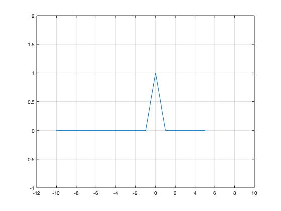
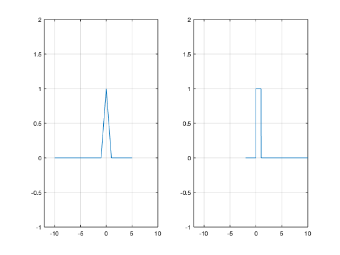
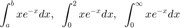

Práctica 2: Señales en tiempo continuo
Contents
- Descripción general de MATLAB
- Crear documento con publish
- Creación de vectores
- Operación elemento a elemento y matricial
- Crear funciones
- Algunas funciones implementadas
- Funciones anonimas
- Gráficas: plot, subplot, plot3, edición con GUI, generar código de gráfica
- Un poco de simbólico
- Observaciones
- Notas
- Entregables
Descripción general de MATLAB
Crear documento con publish
Ayuda en linea para publicar Publish
Creación de vectores
Creamos vectores (fila)
t1= -10:5; % El punto y coma es para que el resultado no sea desplegado
t2=-2:0.01:15;
Para saber las dimensiones
size(t1) size(t2)
ans =
1 16
ans =
1 1701
Operación elemento a elemento y matricial
Las operaciones elemento a elemento nos ayudan a evaluar funciones para valores de su dominio al mismo tiempo, el sigueinte código genera error
t1*t1
En cambio el sigueinte codigo es correcto
t1.*t1
ans =
Columns 1 through 13
100 81 64 49 36 25 16 9 4 1 0 1 4
Columns 14 through 16
9 16 25
Crear funciones
Las funciones en MATLAB tienen la siguiente sintaxis
function [sal1,sal2,sal3]=nombreFuncion(ent1,ent2,ent3) %codigo de la funcion end
Algunas notas sobre las funciones
- El archivo debe guardarse como nombreFuncion.m
- Debes de estar trabajando en el directorio donde este tu función para poder ocuparla, o agregar el directorio
- Las salidas y las entradas son opcionales, en este sentido, hay 4 tipos funciones: con entradas y salidas, con salidas sin entrada, con entrada sin salidas, sin entradas y sin salidas
¿Podrías escribir varias funciones en el mismo archivo y ocupar unas funciones dentro de otras?
Algunas funciones implementadas
help sin help cos help exp help abs help angle help pi help plot help square help sinc help rectpuls help tripuls help sawtooth help heaviside help dirac
Entonces si ejecutamos alguna de las intrucciones anteriores se desplegara una breve descripción de la instrucción solicitada, si se quiere una descripción más completa tendría que ejecutarse doc sinc (por ejemplo)o directamente en la ayuda.
help sinc
SINC Sin(pi*x)/(pi*x) function.
SINC(X) returns a matrix whose elements are the sinc of the elements
of X, i.e.
y = sin(pi*x)/(pi*x) if x ~= 0
= 1 if x == 0
where x is an element of the input matrix and y is the resultant
output element.
% Example of a sinc function for a linearly spaced vector:
t = linspace(-5,5);
y = sinc(t);
plot(t,y);
xlabel('Time (sec)');ylabel('Amplitude'); title('Sinc Function')
See also SQUARE, SIN, COS, CHIRP, DIRIC, GAUSPULS, PULSTRAN, RECTPULS,
and TRIPULS.
Documentation for sinc
doc sinc
Other functions named sinc
sym/sinc tall/sinc
Como ya tenemos declarado un vecto de valores podríamos intentar con
sinc(t1)
ans =
Columns 1 through 7
-0.0000 0.0000 -0.0000 0.0000 -0.0000 0.0000 -0.0000
Columns 8 through 14
0.0000 -0.0000 0.0000 1.0000 0.0000 -0.0000 0.0000
Columns 15 through 16
-0.0000 0.0000
Funciones anonimas
Observemos el siguiente código
f = @(t) exp(-t).*t+exp(-t).*cos(2*t); u = @(t) t>=0; p = @(t) (t>=0) & (t<1);
Gráficas: plot, subplot, plot3, edición con GUI, generar código de gráfica
plot([1,3],[5,-4])

figure plot(t1,sinc(t1))

figure plot(t2,sinc(t2))

figure t4=-100:0.1:100; plot(t4,t4.^3,'LineWidth',2) grid on ax = gca; ax.XAxisLocation = 'origin'; ax.YAxisLocation = 'origin'; ax.Box = 'off'; title('Gráfica de la señal f(t)=t^3 ')

figure t3=-100:0.1:100; plot3(t3,cos(t3),sin(t3),'LineWidth',2) grid on xlabel('Dominio t') ylabel('Re') zlabel('Im') title('Gráfica de la señal f(t)=e^{tj} ')

figure subplot(2,3,1) plot(0:0.01:5,f(0:0.01:5)) subplot(2,3,2) plot(t1,u(t1)) subplot(2,3,5) plot(t2,p(t2))

figure() plot(t2,u(t2))

figure()
plot(t1,p(t1))
grid on
axis([-12 10, -1, 2])
 figure() subplot(1,2,1) plot(t1,p(t1)) grid on axis([-12 10, -1, 2]) subplot(1,2,2) plot(t2,p(t2)) grid on axis([-12 10, -1, 2])
Entonces veamos que sucede con lo siguiente
t=-10:0.001:10; figure subplot(2,1,1) plot(t,p(t)) grid on axis([-10, 10 -0.5 1.5]) subplot(2,1,2) plot(t,p(t-2)) grid on axis([-10, 10 -0.5 1.5])

Un poco de simbólico
Realizar las siguientes integrales

syms a b x Q=int(x*exp(-x),a,b) subs(Q,{a,b},{0,2})
Q = exp(-a)*(a + 1) - exp(-b)*(b + 1) ans = 1 - 3*exp(-2)
El sigueinte código produce error
subs(Q,{a,b},{0,inf})
Pero este código no, ¿Por qué?
Q=int(x*exp(-x),a,inf)
subs(Q,a,0)
close all
Q = exp(-a)*(a + 1) ans = 1
Observaciones
Tener claro que esto no es absoluto, es una manera de implementación en MATLAB, es decir, la implementación de las señales podría variar incluso en el mismo MATLAB, y por supuesto si se utiliza otro software
Notas
- Backgroun sección MB de Lathi
Entregables
Se revisa una publicación (html) de la práctica. En este caso tendra que iniciar indicando el nombre de la práctica y sus datos personales, equipos de dos o tres personas (Portada). El índice del contenido lo genera Publish (índice). Los objetivos son los sigueintes:
- Manipulación básica de MATLAB
- Gráficas de señales reales y complejas continuas
- Transformación de señales continuas (escalamientos y traslaciones)
- Calculo de energía y potencia de señales continuas
Como introducción investigue un poco de la historia del desarrollo de MATLAB, hable un poco sobre alternativas de software libre (Octave, Python) y porporcione enlaces (confiables) donde se pueda consultar información para comenzar a utilizar dichas herramientas
Para el desarrollo se tienen que resolver cada uno de los siguientes problemas comenzando una nueva sección (para la publicación) en cada uno de ellos.
- Realiza las mismas operaciones que Lathi en las secciones M1.1 a M1.4 que se encuentra al final del capítulo 1 y antes de la sección de problemas, cambie los inline por funciones anonimas
- Resuelve el problema 1.2.2 usando las herramientas del paso anterior.
- Construya una función que gráfique funciones de
 en el formato de su elección y pruebe su código para mostrar las gráficas de magnitud y fase para las fórmulas 1, 2 y 3 de la tabla que se encuentra en al sección de tranformada de Fourier de la siguiente página http://rafneta.github.io/Notas/NotasSyS/index.html con valores de a=1/2 y n = 2. El rango de la varible se deja a criterio.
en el formato de su elección y pruebe su código para mostrar las gráficas de magnitud y fase para las fórmulas 1, 2 y 3 de la tabla que se encuentra en al sección de tranformada de Fourier de la siguiente página http://rafneta.github.io/Notas/NotasSyS/index.html con valores de a=1/2 y n = 2. El rango de la varible se deja a criterio. - Construya una función que gráfique funciones de
 en el formato de su elección y pruebe su código para mostrar las gráficas de las fórmulas 1, 2 y 3 de la tabla que se encuentra en al sección de tranformada de Fourier de la siguiente página http://rafneta.github.io/Notas/NotasSyS/index.html con valores de a=1/2 y n = 2. El rango de la varible se deja a criterio.
en el formato de su elección y pruebe su código para mostrar las gráficas de las fórmulas 1, 2 y 3 de la tabla que se encuentra en al sección de tranformada de Fourier de la siguiente página http://rafneta.github.io/Notas/NotasSyS/index.html con valores de a=1/2 y n = 2. El rango de la varible se deja a criterio. - Construya una app que permita
- Gráficar señales en tiempo continuo reales, el usuario ingresa la definición de la señal en el formato especifico
- El usuario puede definir el intervalo de la gráfica
- El usuario puede seleccionar el tipo de transformación (horizontal, vertical o combinación) que desee realizar a la señal, la app debera mostrar la grafica de esta transformación. Puede consultar los ejemplos preconstruidos que le puedan ser de utilidad.
- Se adjunta una imagen de la app a la práctica, un enlace a la app en MATLAB online (drive), y el archivo de la app.
No es necesario incluir conclusiones en esta práctica, si lo considera necesario puede incluir apéndices, no olvide incluir sus referencias.
El código de esta publicación lo puedes encontrar en el siguiente enlace